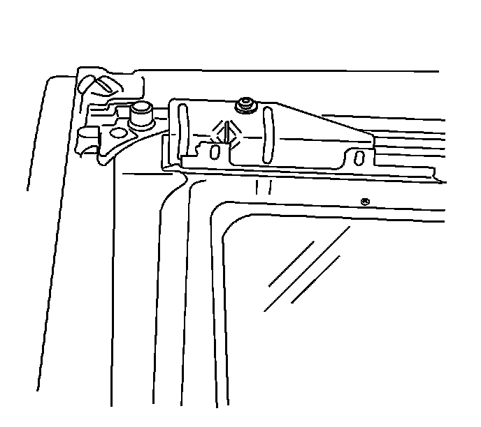
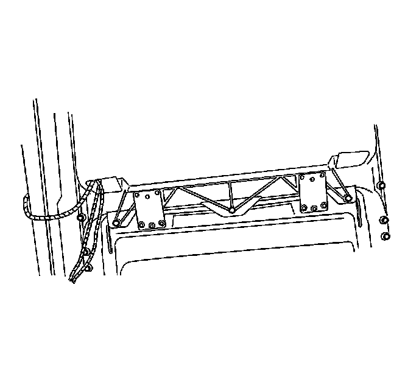

Sunroof Window Replacement (Rear Stationary)
Sunroof Window Replacement (Rear Stationary)
Removal Procedure
1. Remove the headliner. Refer to Headlining Trim Panel Replacement (Service and Repair) .

2. Remove the screws from the panel bracket to the sunroof frame.

3. Remove the hinge plate to sunroof frame screws.
4. Remove the window panel.
Installation Procedure
1. Position the window panel to the sunroof frame.
2. Loosely install the screws to the window bracket.
3. Loosely install the screws to the hinge plate sunroof frame
Notice: Refer to Fastener Notice (Fastener Notice) .
4. Verify the panel edge clearances. Refer to Sunroof Window Height and Opening Fit Adjustment (Adjustments) .
Tighten the window bracket screws to 5 N.m (41 lb in).
Tighten the hinge plate sunroof frame screws to 5 N.m (41 lb in).
5. Install the headliner. Refer to Headlining Trim Panel Replacement (Service and Repair) .